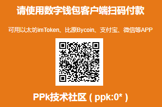

用奥丁号除了可以关联比特币、以太坊、比原等数字加密资产钱包地址，还可以支持支付宝或者银行账户等传统资产地址，这也是PPk协议的开放和灵活性的体现。
演示案例：https://www.chainnode.com/post/386612
说明文档： 奥丁号关联多币种信息接口定义（草案）

未来数字身份的关键，是如何在没有传统集中式系统的情况下，自主识别和验证人员、组织和设备。自主数字身份与区块链就是绝配，是下一波的新热点。名称即资产，注册即挖矿，会有越来越多人理解在区块链世界拥有自主身份标识的重要性。PPk浏览器支持将奥丁号（ODIN）作为用户自主身份，配合相关应用示例（如PPk-JoyAsset数字资产自主拍卖交易工具原型），可以很好地展示奥丁号兼容DID去中心化标识规范，融合区块链技术，在自主开放身份领域的应用场景和价值潜力。
说明文档： 基础定义 | 技术规范 | 示例说明
随着区块链技术的发展，相信将来“人人可以发行数字资产”，到时在传统交易所市场外，大众化数字资产的低频次分散交易，作为长尾市场的潜力将非常大，也将与区块链技术充分结合。跨链价值流通正成为业界研究的焦点，包括Cosmos、Polkadot等热门项目都在围绕这个方向打造生态。作为结合AI特色算法的公链代表项目，比原链定位数字资产的自主发行和交易平台，面对资产跨链跨系统的需求，资产标识需要满足全网自主唯一性，去中心化新型DNS系统才是更合适的选择，因此比原链与PPkPub技术社区进行深入合作，采用奥丁号(ODIN)作为比原数字资产跨链标识的解决方案。
演示案例：https://www.8btc.com/article/221469

在注册奥丁号(ODIN)后，可以很方便地采用区块链或DAT、IPFS等分布式存储服务，来搭建一个支持PTTP协议的新型内容“网站”，将你注册的奥丁号(ODIN)配置映射到这个新网站，通过支持PPk开放协议的浏览器就能访问。
详细资料：安装PPk浏览器快速体验指南
使用PPk开源Java客户端注册ODIN标识和搭建AP测试节点详细指南

将物联网设备视为基于奥丁号(ODIN)和PTTP协议所构建的对等可信信息交换网络里的AP节点，从而为访问和控制物联网设备所属传感器数据提供了统一、灵活的接口，更好地支持具体应用的开发。相比传统的物联网技术，通过PPk-PTTP协议将信息交换逻辑切换到通过区块链为信息中介枢纽，这样一旦部署运行，即使无人维护也能持续运行，不用担心服务中断了。
演示案例：基于PPk开放协议开发物联网软硬件结合DAPP


如何体验奥丁号收款码？